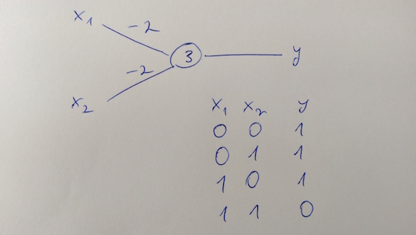
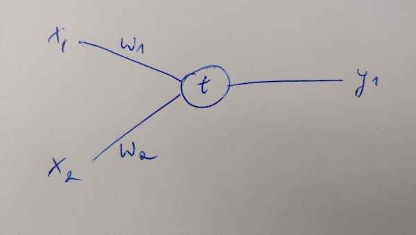
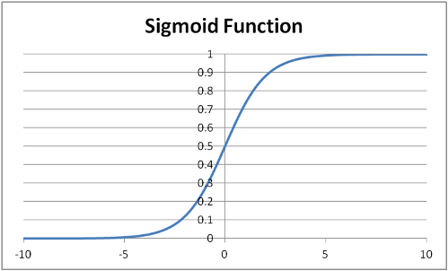
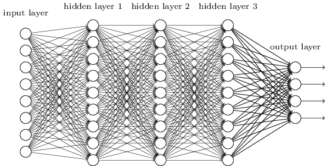

Neural networks - a nervous shock
Until some time ago, there was a list of programming and computer science related terms that used to blow my mind. I'd think of metaprogramming or functional programming concepts like immutability and monads and assume that they are massively complex mechanisms involved under the hood. Because these are quite odd sounding words you tend to give them more respect and sort of surround them with a mysterious vibe. If you share the same point of view and occasionally learn new things, you may often feel dissapointed afterwards. "Is that it?" - you may think. Computer science is both very complex and simple. And on top of it, it's extremely difficult to create simple things in programming. Needless to say, when I first heard about neural networks I started imagining this abstruse design that's supposed to mimic brain functions and was hoping for more than ever.
So as you probably now know, instead of a mind bending solution, I was presented with a simple but robust and well-thought design. Neural networks is an old concept, the first computational model was introduced in 1943 and was a topic of research since then. What is interesting, is that it never really took off until recently when deep learning - neural network with subnetworks in the hidden layers - was invented. The are two reasons why NN were not as popular. First of all, to produce significant results, you need a lot of computational power and even though the CPUs get exponentially faster every few years, the main power boost was provided by the recent growth of GPUs which currently totally outperform CPUs. The second reason is that NN are hard to train, it takes a lot of time to apply proper weights and many times we get little to no feedback whether we are going in a good direction (when choosing network structure or tweaking the number of layers).
Yes, I'm aware I didn't explain the terms above. Let's start from the very beginning. This is a very simple neural network.

What you see is a perceptron which has two inputs and produces a single output. Inputs are binary, so you can give either zero or one. On each edge, there is a weight, value which gets multiplied by our input. Finally, the perceptron holds a threshold, a number which determines the output. We take the sum of inputs multiplied by weights and compare this sum with the threshold and if it is greater then the perceptron returns 1, if less or equal we get 0. We can model a simple logic OR function using a single perceptron and two inputs, just like you can see on the picture below.

Now that's cool but useless. The same thing we could do using logistic regression. What neural networks really excel at, are (mostly) classification problems with large number of variables. Logistic regression started to actually struggle when we introduced multiple variables. It still works, but it takes massive amount of time for gradient descent to come up with a proper polynomial parameters to fit the training data. In a common programming problem, that is image recognition, we use each pixel of an image as input. Given a small image, consisting of just 50x50 pixels, each in rgb(three values instead of one, like in greyscale, ranging from 0 to 255) we will end up with 7500 variables. A neural network will have no problem coping with this.
Nowadays, we use sigmoid neurons rather than perceptrons. What is the difference? They look the same, but with sigmoid neurons we can work using a different input than binary, that is any value between 0 and 1. There is also a bias value, which is almost the same as threshold, but it has an opposite sign. So we actually end up summing all the weights multiplied by inputs and finally, add the bias. This total value is passed as an argument to the sigmoid function, which is our neuron output and returns a values ranging from 0 to 1. I've talked about sigmoid functions a bit more in the previous post.

Neural networks have layers. The network used to compute an OR function had just two layers. Input and output. If we were to introduce another layer, computes a some sort of intermediate result, we would add it in between input and output. This type of layers are called hidden layers. Without them, it would be impossible to use NN for anything more complicated than simple linear functions. This is where the real power of networks resides. In Deep Learning, we go even further. Within the hidden layers, there are other independant neural networks which sometimes have other networks nested inside. This technique was used in Alpha Go, the famous computer who beat Lee Sedol, one of the best players of the decade, in the game called Go.

I casually mentioned image recognition as one of the prominent fields where Neural Networks are applied. In fact, NN are everywhere. Character recognition, stock market prediction, robotics, you name it. They can also be a building block in reinforcement learning, a third type of machine learning, after supervised and unsupervised learning.
Reinforcement learning differs from supervised learning as there aren't any sets of correct input-output pairs provided. Instead, it is concentrated on a constant reevaluation of an environment, where each decision results in a reward if it was good and a penalty - in case it was incorrect. This is like training a dog to play fetch, if it chases the ball and returns it, you might give it a snack. It's worth noting that in reinforcement learning we aren't necessarily going to finish executing the program, it is supposed to run looped and go through a constant action-feedback-(reward|penalty) cycle. This type of learning is a type of problem, where an agent has to find the best possible action in his current state.
Areas where RL can be applied are wide but I wanted to show you something really cool. Turns out Google's research team DeepMind developed an algorithm which taught itself to play almost 50 video games including Space Invaders and Pong. There is also a guy, who used RL to play Flappy Bird.
Neural networks, thanks to deep learning, are gaining more exposure nowadays. They offer an easy way to start playing with machine learning. Even though they are a simple concept, with a proper structure and adjusted weights, you might be able to produce suprisingly good results like an algorithm which given an image is able to tell what number the image shows, with over 95% accuracy! (More on that in the Michael Nielsen's free book.
Oh and one more thing, since I don't post often, you might be interested a great video series which presents different machine learning papers in a very accessible way, all that in under 2 minutes!